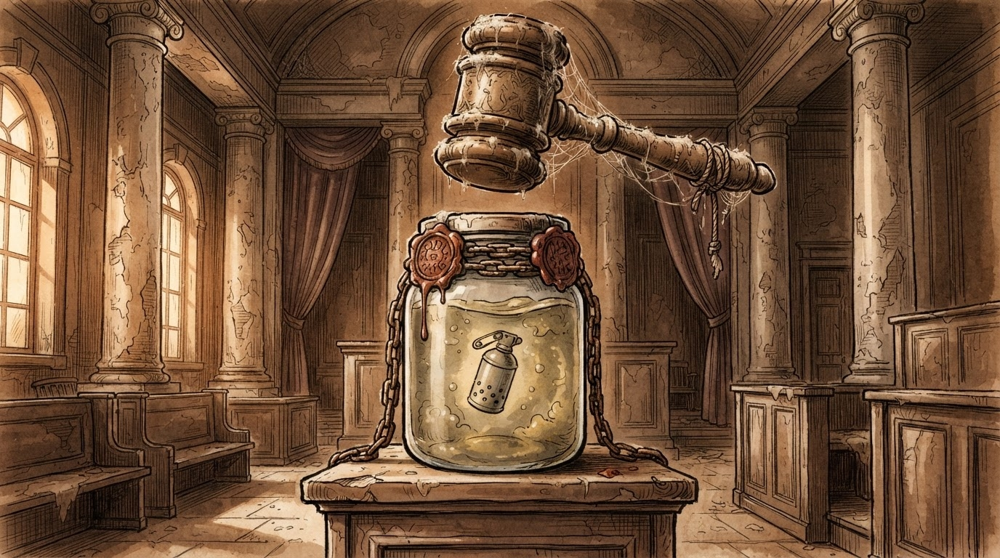

Politikë
Gazeta Satirike e Kosovës dhe Shqipërisë — lajme që nuk duhet t'i besoni, por i lexoni gjithsesi
Nga 10 vjet e 3 muaj në 3 vjet e 8 muaj: redaksia jonë llogarit se çdo rigjykim kushton mesatarisht 2.2 vite më lirë.

Sistemi ynë gjyqësor ka zbuluar më në fund një formulë që ekonomistët e quajnë "elasticiteti i dënimit": sa më shumë herë kthehet një çështje në rigjykim, aq më i lehtë bëhet vendimi final. Analistët tashmë flasin për një "kurbë Lekaj" që mund të mësohet në fakultetet e ekonomisë krah kurbës së kërkesës dhe ofertës.
"E para herë ishte çmimi i listës, kjo ishte çmimi pas pazarit", shpjegoi një jurist që preferoi të mos identifikohej, sepse çështja mund të kthehet edhe një herë në rigjykim dhe emri i tij të bëhet gjithashtu më i lehtë.
"Drejtësia jonë funksionon si letër me shumë kopje karboni: sa më shumë herë e shtyp, aq më e zbehur del." — një vëzhgues gjyqësor anonim, i cili preferoi bojën origjinale
Sipas llogaritjes së redaksisë, nëse trendi vazhdon me të njëjtin ritëm zbritjeje, deri në rigjykimin e tretë dënimi do të konvertohet automatikisht në një kartolinë falënderimi. Disa juristë e shohin këtë si "efikasitet gjyqësor", të tjerë e quajnë thjesht "inflacion i kundërt".
Ndërkohë, bashkë-të akuzuarit në rastin "53-milionëshi" morën dënime më të vogla se ministri, duke konfirmuar rregullin e vjetër institucional: sa më lart posti, aq më i gjatë udhëtimi i letrave nga një gjykatë në tjetrën.
Deri në vendimin final të formës së prerë, redaksia jonë ka hapur një sondazh: cili dënim do të jetë më i shkurtër, ai i radhës apo mandati i ardhshëm i deputetëve që duhet ta votojnë buxhetin për gjyqësorin?